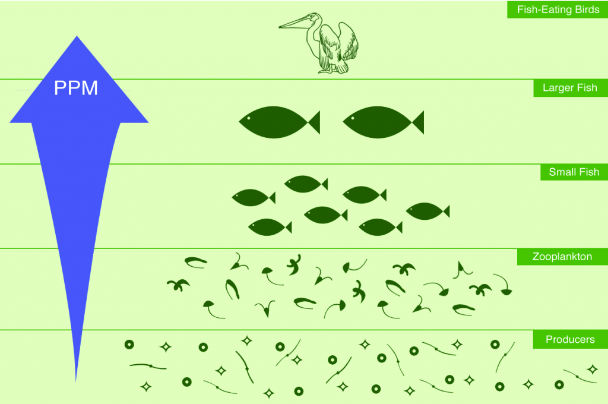

Enviromental Biomagnifiction
Pages 1-4 all convey the plethora primary and secondary sources of microplastics. This high concentration of PMDs, or plastic marine debris, entering aquatic environments has a highly detrimental impact on aquatic life, and in turn, terrestrial life. These microplastics continually flow and circulate through waterways, being carried by the ocean currents shown in the map, introducing them to even the most remote of areas. Plastics produced in one place can circulate to anywhere on the globe. Because of this, areas producing the most unmanaged plastic waste, such as China, Indonesia, the Philippines and Vietnam impacts environments across the world. The area shown on the map reflects only the most available and reliable information. These plastics are ingested by small fish, seabirds, and filter feeders mistaking them for plankton and small prey. Larger predators then eat these organisms, magnifying the concentration, and in turn the impact of the plastics and toxins. Eventually this chain leads up to humans, potentially impacting our health and endangering our food supply. It can also potentially cripple food chains and ecosystems, as microplastic accumulation damages reproductive and digestive systems of organisms.